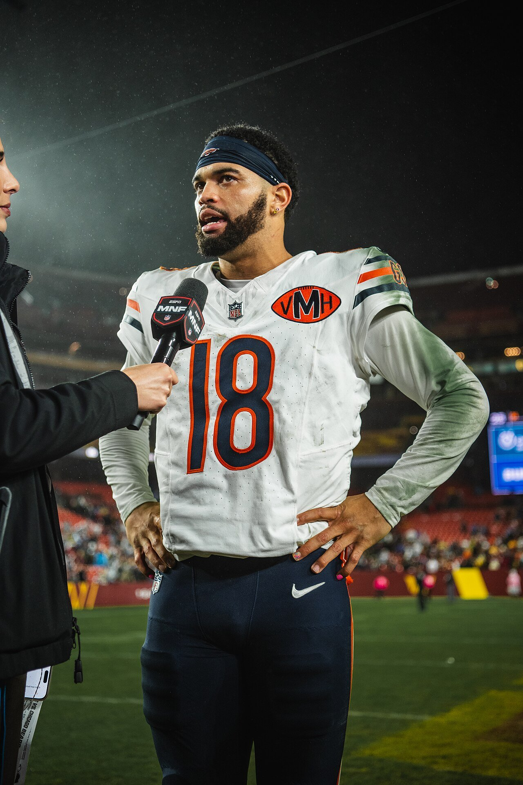

Bet
BetPatriots vs Bears on Thursday Night Football: Drake Maye Against Caleb Williams, Two 4 and 2 Teams, And A Line That Has Moved From 1.5 To 3
Both teams are 4 and 2, and both quarterbacks came out of the 2024 draft two picks apart. Drake Maye has thrown 10 touchdowns and one interception during New England's three game winning streak. Caleb Williams just came back from a hamstring injury that cost him three games and went 30 for 36 for 305 yards in a win at Atlanta. Chicago runs the ball for an NFL high 160.7 yards a game. DraftKings opened the Bears as 1.5 point favorites, and the number is now 3, the most important number in football.

 Patriots vs Bears
Patriots vs Bears

Matchup Context
Two 4 and 2 teams, two young quarterbacks from the same draft class, and a short week. Williams went first overall to Chicago in 2024; Maye went third to New England. Per the Associated Press preview on ESPN, they grew up going to the same football camps, and both coaching staffs spent the week talking about the same thing: quarterbacks who hurt you when the pocket breaks down.
Chicago has been the more volatile team. The Bears opened with a 59 to 37 win at Carolina, scored 3 points in a 9 to 3 home loss to Minnesota, beat Philadelphia 27 to 7 and the Jets 23 to 12 at home, got blown out 31 to 7 at Green Bay, then won 31 to 23 at Atlanta on Sunday. That adds up to 150 points scored and 119 allowed. New England started 1 and 2 with a 13 to 10 loss at Seattle and a 35 to 6 loss at Jacksonville around a win over Pittsburgh, and has won three straight since: 29 to 26 at Buffalo, 45 to 17 over Las Vegas and 26 to 19 over the Jets. The Patriots have scored 136 and allowed 113.
The last meeting went New England's way, 19 to 3 at Soldier Field on November 10, 2024, and the Patriots lead the series 11 to 5 counting the playoffs, per the AP. Against the spread, the AP lists New England at 3 and 1 with two pushes and Chicago at 4 and 2.
Injury Report & Lineup Notes
New England Patriots Chicago BearsThe two lists hit different parts of the field. New England is thin on the offensive line, with its center out, a guard on injured reserve and a starting tackle questionable, the week after the Patriots went a full game without allowing a sack for the first time this season, per the AP. Chicago's problems are at linebacker: Sanborn is out and Edwards is doubtful, which matters against a quarterback the Bears' own defensive coordinator, Dennis Allen, described as someone who "makes people miss." With Monangai out, D'Andre Swift should carry an even bigger share of the Bears' run game. Final inactives come out about 90 minutes before kickoff, 3:45 PM Pacific.
Maye vs The Bears, Williams And The Run Game vs New England
New England offense against the Chicago defense
Maye has been a different player during the winning streak. Per the AP, he has completed 64.1% of his passes for 878 yards and 10 touchdowns with one interception over the last three games, and he can become the first Patriots quarterback since Tom Brady in 2014 to throw at least three touchdowns in four straight games. On the season he has 1,463 yards, 11 touchdowns and 7 interceptions, so nearly all of the turnovers came in the first three weeks. New England averages 8.0 yards per pass attempt and 7.3 net, and Romeo Doubs leads the receivers with 261 yards and 3 touchdowns on 14 catches. The AP's matchup to watch is A.J. Brown against Bears corner Jaylon Johnson: Brown, acquired from Philadelphia in a June trade, was targeted 10 times against the Jets but dropped three and finished with 3 catches for 27 yards.
Chicago's defense allows 19.8 points and 318.5 yards a game, 228.0 of them through the air, and held Atlanta to 257 total yards on Sunday. Austin Booker leads the Bears with 4 of their 17 sacks, and rookie safety Dillon Thieneman leads the team with 39 tackles; the AP notes he is the only rookie defensive back in the league with at least 35 tackles, an interception and a sack. The question is the middle of the field, where Chicago will be without Sanborn and likely Edwards against a quarterback who extends plays.
Chicago offense against the New England defense
This is a running team first. The Bears average an NFL high 160.7 rushing yards per game at 4.5 yards per carry, per ESPN and the AP. Swift has 398 yards and 6 touchdowns on 94 carries, three of those scores in the last two games, and the AP notes he can become the first Bears back since Neal Anderson in 1990 with seven rushing touchdowns in the first seven games. Williams' season line, 66 of 91 for 712 yards, 3 touchdowns and 1 interception, reflects only three games because of the hamstring, and his return at Atlanta was his best: 30 of 36 for 305 yards. Luther Burden III leads the team with 31 catches for 361 yards. Chicago converts 45.46% of its third downs.
New England's run defense is the matchup to circle. The Patriots allow 91.8 rushing yards a game and 18.8 points, both good numbers, and Elijah Ponder has 5.5 sacks. But the Bears' offense is built to stay on the field, and the place it has struggled is the red zone, where Chicago scores touchdowns on only 50.00% of its trips. If New England's defense bends and makes the Bears kick, its offense, which scores touchdowns on 55.56% of red zone trips and points on 88.89%, can trade field goals for touchdowns.
Advanced Stats & Style Profile
New England Patriots (2026)
Chicago Bears (2026)
EPA per play and success rate were not available from the sources read for this article, so the efficiency picture uses ESPN's season team statistics, labelled as ESPN reports them, with yards per play calculated from ESPN's total yards and offensive plays. The profiles are close to mirror images. New England is the more efficient team per snap, 5.9 yards per play to 5.6, and far more efficient throwing the ball, 7.3 net yards per attempt to 6.1. Chicago runs far more plays, 439 to 387 over the same six games, converts more third downs and holds the ball longer, about 36 minutes a game by ESPN's possession totals against about 31 for New England.
The two numbers that could swing this game are turnovers and red zone finishing. New England has 13 giveaways and a minus 6 margin, though Maye's one interception in three games says that has calmed down. Chicago is minus 2. In the red zone, the Patriots come away with points almost nine times in ten, while the Bears have come away empty on about a third of their trips. A Chicago team that moves the ball but settles for field goals is how a 3 point favorite fails to cover.
Keys To The Game
Patriots Keys Bears KeysMarket Context
DraftKings opened Chicago at 1.5 with the moneyline at Bears -120 and Patriots +100, essentially a coin flip with the home team slightly favored. The current number is 3, with the Bears -155 and the Patriots +130, so the implied chance of a Chicago win moved from 54.5% at open to 60.8% now. The spread price tells you the market is leaning further: Bears -3 is -102 while Patriots +3 is -118, which means DraftKings is charging more to take the points than to lay them. ESPN's Matchup Predictor gives Chicago a 59.4% chance, in line with the moneyline.
The total has moved more than the side, from 47.5 to 50.5, with the over now -118. That is a bet on the version of these offenses that showed up lately. Chicago's six games have averaged 44.8 combined points (96, 12, 34, 35, 38 and 54), and two went over 50.5. New England's have averaged 41.5 (23, 23, 41, 55, 62 and 45), also with two over this number. Weather at Soldier Field is forecast at 61 degrees with gusts to 7 mph, per ESPN, so the wind off the lake should not be a factor.
The market's read is that Chicago at home with Williams healthy is a different team from the one that lost to Minnesota and Green Bay, and that the Bears' run game will travel against a Patriots defense that is good but has not seen this volume. The case against it is that New England has the more efficient offense, the hotter quarterback and a red zone edge, and that 3 is a big number to lay in a game the market rated as a pick'em at the open. BetLegend's Featured Game is analysis only; we post no pick here.
Final Thoughts
This is a style matchup. Chicago wants to run the ball, win third downs and keep the clock moving, and it does all three better than New England. The Patriots want to throw, and they are better at it: more yards per attempt, more points per red zone trip, and a quarterback who has turned a shaky start into the best stretch of his career. Injuries tilt the trenches in opposite directions, with New England's offensive line and Chicago's linebackers both short handed.
Watch Chicago's first trip inside the 20. If Swift is finishing drives and the Bears are converting touchdowns, the move to 3 will look right. If Chicago is moving the ball and kicking field goals while Maye keeps hitting explosive throws, this is the kind of game a road team can win outright. Check the inactives for Edwards and Moses, and check the final number before kickoff.
Where Every Number Came From
Every number in this breakdown was read live on October 22, 2026 between 1:45 and 2:30 PM Pacific. Odds, open and current: ESPN game summary pickcenter, DraftKings. Records, points for and against, team leaders, injuries, broadcast, venue, weather and the Matchup Predictor: ESPN game summary for event 401873010. Game by game scores: ESPN team schedules for both clubs. Team passing, rushing, third down, red zone, turnover, sack and possession numbers: ESPN's 2026 regular season team statistics for both clubs. Per game points and yards allowed: the ESPN game summary team statistics. Maye's three game numbers, Williams' Atlanta line and hamstring absence, the series record, the last meeting, against the spread records, the Brown and Johnson matchup, the rushing yards rank, Swift's touchdown note, the Thieneman note and the sack note: the Associated Press preview published on ESPN on October 21. EPA per play and success rate were not available from these sources and are not used.
 Warriors vs Lakers
Warriors vs Lakers

 Thunder vs Spurs
Thunder vs Spurs

 Commanders vs 49ers
Commanders vs 49ers

 Rays vs Guardians
Rays vs Guardians


 Utah vs Colorado
Utah vs Colorado

 Brewers vs Dodgers
Brewers vs Dodgers


 Ravens vs Falcons
Ravens vs Falcons


 Georgia vs Alabama
Georgia vs Alabama


 Iowa vs Washington
Iowa vs Washington

 Buccaneers vs Cowboys
Buccaneers vs Cowboys


 Lions vs Panthers
Lions vs Panthers

 Yankees vs Rays
Yankees vs Rays
 Blues vs Stars
Blues vs Stars